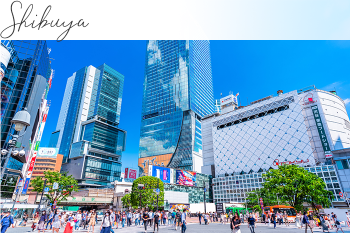
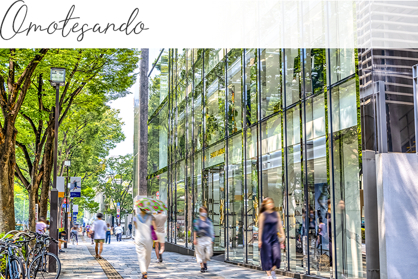
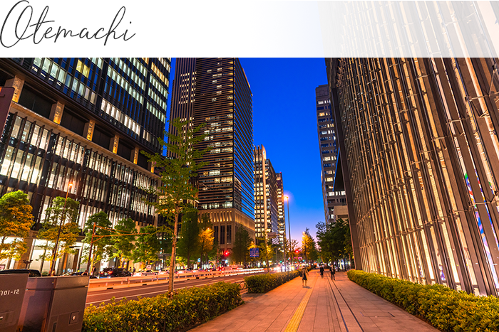
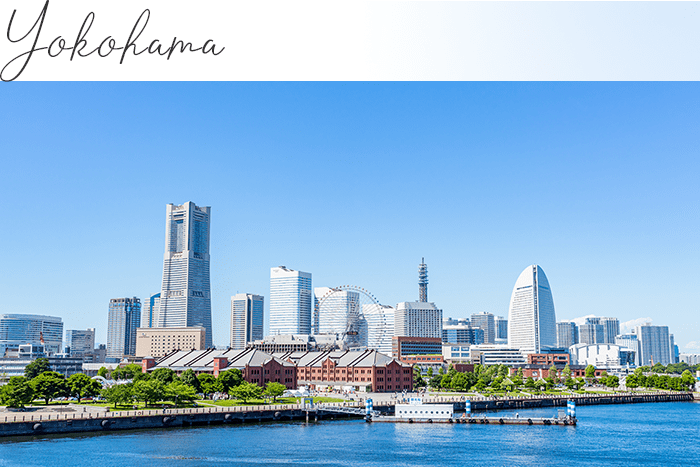
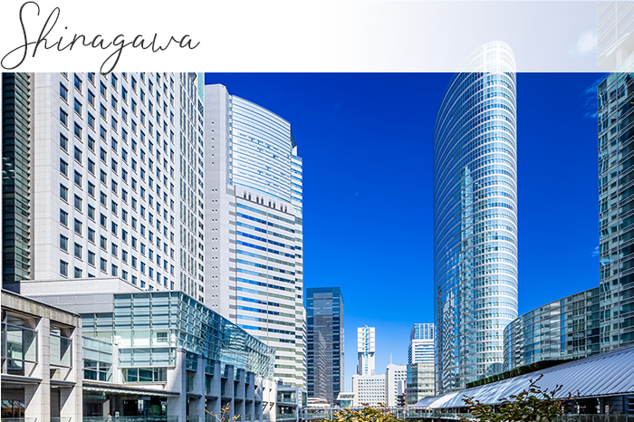
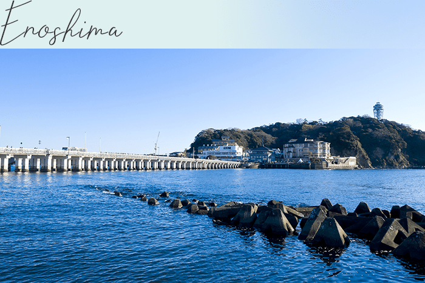
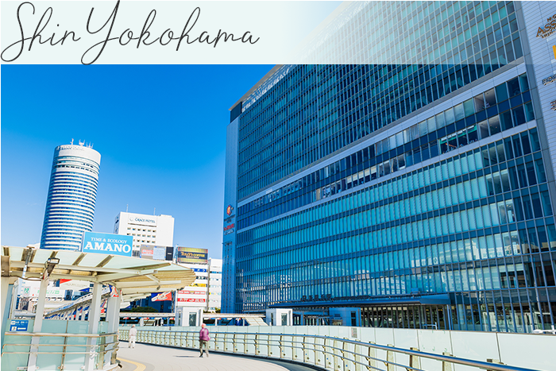
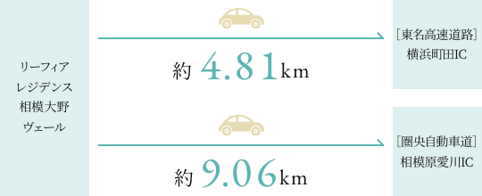
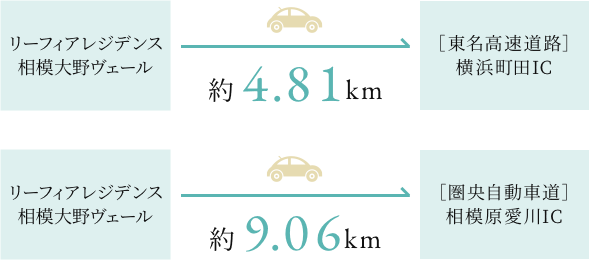
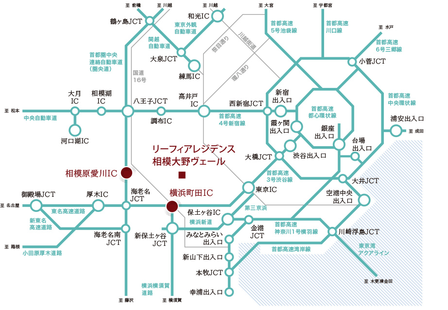

Image photo
都心へも、レジャーにも多彩に広がるアクセスネットワーク。
小田急小田原線の快速急行で
「新宿」へ6駅・直通約41分。
さらに、東京メトロ千代田線への乗り入れにより、「表参道」「大手町」へもスムーズアクセス。
「箱根湯本」や「御殿場」など、リゾートへもロマンスカーで一本です。
また、湘南方面へ延びる小田急江ノ島線を利用すれば、「横浜」も約33分。
各方面へ自在につながるアクセスが、この住まいで手に入ります。
-

Image photo
「新宿」駅…直通41分(日中平常時35分)※小田急小田原線快速急行利用
-

Image photo
「渋谷」駅…40分(日中平常時37分)※小田急小田原線快速急行利用、「下北沢」駅より京王井の頭線急行利用
-

Image photo
「表参道」駅…40分(日中平常時36分)※小田急小田原線快速急行利用、「代々木上原」駅より東京メトロ千代田線利用
路線図
-

Image photo
「大手町」駅…54分(日中平常時50分)※小田急小田原線快速急行利用、「代々木上原」駅より東京メトロ千代田線利用
-

Image photo
「横浜」駅…33分(日中平常時33分)※小田急江ノ島線急行（日中時快速急行）利用、「大和」駅より相鉄本線特急利用
-

Image photo
「品川」駅…58分(日中平常時54分)※小田急小田原線快速急行利用、「下北沢」駅より京王井の頭線急行利用、「渋谷」駅よりＪＲ山手線利用
※掲載の所要時間は、乗換、待ち時間を含んでいます。また所要時間は通勤時のものです。（）内は日中平常時のものとなり、時間帯により異なります。
※小田急小田原線・江ノ島線「相模大野」駅より、「海老名」駅8分（日中平常時8分）（小田急小田原線急行利用）
海や山、新幹線の起点にも
スムーズアクセス。
湘南の海が広がる「片瀬江ノ島」や四季折々の自然に彩られた温泉地「箱根湯本」など、多くの行楽客で賑わうレジャースポットにも気軽なアクセスが可能。
また、新幹線の起点となる「新横浜」も利用しやすいポジションとなっています。
-

Image photo
「片瀬江ノ島」駅…直通33分
(日中平常時31分)※小田急江ノ島線急行（日中時快速急行）利用、「藤沢」駅より小田急江ノ島線（各停）利用
-
Image photo
「箱根湯本」駅…75分(日中平常時59分)※小田急小田原線急行利用、「小田原」駅より箱根登山鉄道利用（日中時「伊勢原」駅より特急利用）※日中時「伊勢原」駅からは乗車券のほか指定席料金がかかります。
-

Image photo
「新横浜」駅…30分(日中平常時25分)※小田急小田原線快速急行（日中時各停）利用、「町田」駅よりＪＲ横浜線（日中時快速）利用
※掲載の所要時間は、乗換、待ち時間を含んでいます。また所要時間は通勤時のものです。（）内は日中平常時のものとなり、時間帯により異なります。
-
空港まで快適に移動できる
駅北口からのリムジンバス。「相模大野」駅の北口からは、羽田空港（東京国際空港）と成田国際空港へつながるリムジンバスが運行。スーツケース等を預けて座って快適にアクセスできる環境が、旅行や出張に伴う移動のストレスを軽減してくれます。
※参照元:神奈川中央交通HPより
-
Image photo
-
カーアクセスの起点となる
２つの高速IC。東名高速道路の「横浜町田IC」と圏央自動車道の「相模原愛川IC」が利用しやすいポジション。東京都心や横浜、羽田空港へのアクセスはもちろん、箱根や御殿場、相模湖など、レジャースポットへのお出かけにも便利な環境となっています。
  -
Image photo
-

高速道路概念図
「南町田グランベリーパーク」へ、
自転車やバスで好アクセス。
大型アウトレットやシネコン、公園などが複合した「南町田グランベリーパーク」へ自転車で約20分※。潤い豊かな水辺の景観が心地よい境川ゆっくりロードをサイクリングを楽しみながらでも約27分(約4,780m)でアクセス可能です。
※掲載の自転車分数は現地から実測したものです。

Image photo
南町田グランベリーパーク駅(自転車20分・約3,950m)